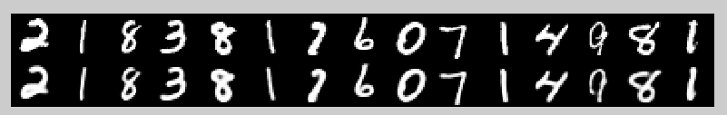

Deep learning：三十五(用NN实现数据降维练习)
前言：
本文是针对上篇博文Deep learning：三十四(用NN实现数据的降维)的练习部分，也就是Hition大牛science文章reducing the dimensionality of data with neural networks的code部分，其code下载见：http://www.cs.toronto.edu/~hinton/MatlabForSciencePaper.html。花了点时间阅读并运行了下它的code，其实code主要是2个单独的工程。一个只是用MNIST数据库来进行深度的autoencoder压缩，用的是无监督学习，评价标准是重构误差值MSE。另一个工程是MNIST的手写字体识别，网络的预训练部分用的是无监督的，网络的微调部分用的是有监督的。评价标准准是识别率或者错误率。
MINST降维实验：
本次是训练4个隐含层的autoencoder深度网络结构，输入层维度为784维，4个隐含层维度分别为1000,500,250,30。整个网络权值的获得流程梳理如下：
- 首先训练第一个rbm网络，即输入层784维和第一个隐含层1000维构成的网络。采用的方法是rbm优化，这个过程用的是训练样本，优化完毕后，计算训练样本在隐含层的输出值。
- 利用1中的结果作为第2个rbm网络训练的输入值，同样用rbm网络来优化第2个rbm网络，并计算出网络的输出值。并且用同样的方法训练第3个rbm网络和第4个rbm网络。
- 将上面4个rbm网络展开连接成新的网络，且分成encoder和decoder部分。并用步骤1和2得到的网络值给这个新网络赋初值。
- 由于新网络中最后的输出和最初的输入节点数是相同的，所以可以将最初的输入值作为网络理论的输出标签值，然后采用BP算法计算网络的代价函数和代价函数的偏导数。
- 利用步骤3的初始值和步骤4的代价值和偏导值，采用共轭梯度下降法优化整个新网络，得到最终的网络权值。以上整个过程都是无监督的。
一些matlab函数：
rem和mod:
参考资料取模（mod）与取余（rem）的区别——Matlab学习笔记
通常取模运算也叫取余运算，它们返回结果都是余数.rem和mod唯一的区别在于:
当x和y的正负号一样的时候，两个函数结果是等同的；当x和y的符号不同时，rem函数结果的符号和x的一样，而mod和y一样。这是由于这两个函数的生成机制不同，rem函数采用fix函数，而mod函数采用了floor函数（这两个函数是用来取整的，fix函数向0方向舍入，floor函数向无穷小方向舍入）。rem（x，y）命令返回的是x-n.*y，如果y不等于0，其中的n = fix(x./y)，而mod(x,y)返回的是x-n.*y，当y不等于0时，n=floor(x./y)
工程中的m文件：
converter.m:
实现的功能是将样本集从.ubyte格式转换成.ascii格式，然后继续转换成.mat格式。
makebatches.m:
实现的是将原本的2维数据集变成3维的，因为分了多个批次，另外1维表示的是批次。
下面来看下在程序中大致实现RBM权值的优化步骤（假设是一个2层的RBM网络，即只有输入层和输出层，且这两层上的变量是二值变量）：
- 随机给网络初始化一个权值矩阵w和偏置向量b。
- 对可视层输入矩阵v正向传播，计算出隐含层的输出矩阵h，并计算出输入v和h对应节点乘积的均值矩阵
- 此时2中的输出h为概率值，将它随机01化为二值变量。
- 利用3中01化了的h方向传播计算出可视层的矩阵v’.(按照道理，这个v'应该是要01化的)
- 对v’进行正向传播计算出隐含层的矩阵h’，并计算出v’和h’对应节点乘积的均值矩阵。
- 用2中得到的均值矩阵减掉5中得到的均值矩阵，其结果作为对应权值增量的矩阵。
- 结合其对应的学习率，利用权值迭代公式对权值进行迭代。
- 重复计算2到7，直至收敛。
偏置值的优化步骤：
- 随机给网络初始化一个权值矩阵w和偏置向量b。
- 对可视层输入矩阵v正向传播，计算出隐含层的输出矩阵h，并计算v层样本的均值向量以及h层的均值向量。
- 此时2中的输出h为概率值，将它随机01化为二值变量。
- 利用3中01化了的h方向传播计算出可视层的矩阵v’.
- 对v’进行正向传播计算出隐含层的矩阵h’， 并计算v‘层样本的均值向量以及h’层的均值向量。
- 用2中得到的v方均值向量减掉5中得到的v’方的均值向量，其结果作为输入层v对应偏置的增值向量。用2中得到的h方均值向量减掉5中得到的h’方的均值向量，其结果作为输入层h对应偏置的增值向量。
- 结合其对应的学习率，利用权值迭代公式对偏置值进行迭代。
- 重复计算2到7，直至收敛。
当然了，权值更新和偏置值更新每次迭代都是同时进行的，所以应该是同时收敛的。并且在权值更新公式也可以稍微作下变形，比如加入momentum变量，即本次权值更新的增量会保留一部分上次更新权值的增量值。
函数CG_MNIST形式如下：
function [f, df] = CG_MNIST(VV,Dim,XX);
该函数实现的功能是计算网络代价函数值f，以及f对网络中各个参数值的偏导数df，权值和偏置值是同时处理。其中参数VV为网络中所有参数构成的列向量，参数Dim为每层网络的节点数构成的向量，XX为训练样本集合。f和df分别表示网络的代价函数和偏导函数值。
共轭梯度下降的优化函数形式为：
[X, fX, i] = minimize(X, f, length, P1, P2, P3, ... )
该函数时使用共轭梯度的方法来对参数X进行优化，所以X是网络的参数值，为一个列向量。f是一个函数的名称，它主要是用来计算网络中的代价函数以及代价函数对各个参数X的偏导函数，f的参数值分别为X，以及minimize函数后面的P1,P2,P3,…使用共轭梯度法进行优化的最大线性搜索长度为length。返回值X为找到的最优参数，fX为在此最优参数X下的代价函数，i为线性搜索的长度（即迭代的次数）。
实验结果：
由于在实验过程中，作者将迭代次数设置为200，本人在实验时发现迭代到35次时已经花了6个多小时，所以懒得等那么久了（需长达30多个小时），此时的原始数字和重构数字显示如下：

均方误差结果为：
Train squared error: 4.318
Test squared error: 4.520
实验主要部分代码及注释：
mnistdeepauto.m:

clear all close all maxepoch=10; %In the Science paper we use maxepoch=50, but it works just fine. numhid=1000; numpen=500; numpen2=250; numopen=30; fprintf(1,'Converting Raw files into Matlab format \n'); converter; % 转换数据为matlab的格式 fprintf(1,'Pretraining a deep autoencoder. \n'); fprintf(1,'The Science paper used 50 epochs. This uses %3i \n', maxepoch); makebatches; [numcases numdims numbatches]=size(batchdata); fprintf(1,'Pretraining Layer 1 with RBM: %d-%d \n',numdims,numhid); restart=1; rbm; hidrecbiases=hidbiases; %hidbiases为隐含层的偏置值 save mnistvh vishid hidrecbiases visbiases;%保持每层的变量，分别为权值，隐含层偏置值，可视层偏置值 fprintf(1,'\nPretraining Layer 2 with RBM: %d-%d \n',numhid,numpen); batchdata=batchposhidprobs;%batchposhidprobs为第一个rbm的输出概率值 numhid=numpen; restart=1; rbm;% 第2个rbm的训练 hidpen=vishid; penrecbiases=hidbiases; hidgenbiases=visbiases; save mnisthp hidpen penrecbiases hidgenbiases;%mnisthp为所保存的文件名 fprintf(1,'\nPretraining Layer 3 with RBM: %d-%d \n',numpen,numpen2); batchdata=batchposhidprobs; numhid=numpen2; restart=1; rbm; hidpen2=vishid; penrecbiases2=hidbiases; hidgenbiases2=visbiases;%第3个rbm save mnisthp2 hidpen2 penrecbiases2 hidgenbiases2; fprintf(1,'\nPretraining Layer 4 with RBM: %d-%d \n',numpen2,numopen); batchdata=batchposhidprobs; numhid=numopen; restart=1; rbmhidlinear; hidtop=vishid; toprecbiases=hidbiases; topgenbiases=visbiases;%第4个rbm save mnistpo hidtop toprecbiases topgenbiases; backprop;
rbm.m:
epsilonw = 0.1; % Learning rate for weights epsilonvb = 0.1; % Learning rate for biases of visible units epsilonhb = 0.1; % Learning rate for biases of hidden units %由此可见这里隐含层和可视层的偏置值不是共用的，当然了，其权值是共用的 weightcost = 0.0002; initialmomentum = 0.5; finalmomentum = 0.9; [numcases numdims numbatches]=size(batchdata);%[100,784,600] if restart ==1, restart=0; epoch=1; % Initializing symmetric weights and biases. vishid = 0.1*randn(numdims, numhid); %权值初始值随便给,784*1000 hidbiases = zeros(1,numhid); %偏置值初始化为0 visbiases = zeros(1,numdims); poshidprobs = zeros(numcases,numhid);%100*1000，单个batch正向传播时隐含层的输出概率 neghidprobs = zeros(numcases,numhid); posprods = zeros(numdims,numhid);%784*1000 negprods = zeros(numdims,numhid); vishidinc = zeros(numdims,numhid); hidbiasinc = zeros(1,numhid); visbiasinc = zeros(1,numdims); batchposhidprobs=zeros(numcases,numhid,numbatches);% 整个数据正向传播时隐含层的输出概率 end for epoch = epoch:maxepoch, %总共迭代10次 fprintf(1,'epoch %d\r',epoch); errsum=0; for batch = 1:numbatches, %每次迭代都有遍历所有的batch fprintf(1,'epoch %d batch %d\r',epoch,batch); %%%%%%%%% START POSITIVE PHASE %%%%%%%%%%%%%%%%%%%%%%%%%%%%%%%%%%%%%%%%%%%%%%%%%%% data = batchdata(:,:,batch);% 每次迭代都需要取出一个batch的数据，每一行代表一个样本值（这里的数据是double的，不是01的，严格的说后面应将其01化） poshidprobs = 1./(1 + exp(-data*vishid - repmat(hidbiases,numcases,1)));% 样本正向传播时隐含层节点的输出概率 batchposhidprobs(:,:,batch)=poshidprobs; posprods = data' * poshidprobs;%784*1000，这个是求系统的能量值用的，矩阵中每个元素表示对应的可视层节点和隐含层节点的乘积（包含此次样本的数据对应值的累加） poshidact = sum(poshidprobs);%针对样本值进行求和 posvisact = sum(data); %%%%%%%%% END OF POSITIVE PHASE %%%%%%%%%%%%%%%%%%%%%%%%%%%%%%%%%%%%%%%%%%%%%%%%% poshidstates = poshidprobs > rand(numcases,numhid); %将隐含层数据01化（此步骤在posprods之后进行），按照概率值大小来判定.
%rand(m,n)为产生m*n大小的矩阵，矩阵中元素为(0,1)之间的均匀分布。 %%%%%%%%% START NEGATIVE PHASE %%%%%%%%%%%%%%%%%%%%%%%%%%%%%%%%%%%%%%%%%%%%%%%%%% negdata = 1./(1 + exp(-poshidstates*vishid' - repmat(visbiases,numcases,1)));% 反向进行时的可视层数据 neghidprobs = 1./(1 + exp(-negdata*vishid - repmat(hidbiases,numcases,1)));% 反向进行后又马上正向传播的隐含层概率值 negprods = negdata'*neghidprobs;% 同理也是计算能量值用的，784*1000 neghidact = sum(neghidprobs); negvisact = sum(negdata); %%%%%%%%% END OF NEGATIVE PHASE %%%%%%%%%%%%%%%%%%%%%%%%%%%%%%%%%%%%%%%%%%%%%%%%%% err= sum(sum( (data-negdata).^2 ));% 重构后的差值 errsum = err + errsum; % 变量errsum只是用来输出每次迭代时的误差而已 if epoch>5, momentum=finalmomentum;%0.5，momentum为保持上一次权值更新增量的比例，如果迭代次数越少，则这个比例值可以稍微大一点 else momentum=initialmomentum;%0.9 end; %%%%%%%%% UPDATE WEIGHTS AND BIASES %%%%%%%%%%%%%%%%%%%%%%%%%%%%%%%%%%%%%%%%%%%%%%% vishidinc = momentum*vishidinc + ... %vishidinc 784*1000，权值更新时的增量； epsilonw*( (posprods-negprods)/numcases - weightcost*vishid); %posprods/numcases求的是正向传播时vihj的期望，同理negprods/numcases是逆向重构时它们的期望 visbiasinc = momentum*visbiasinc + (epsilonvb/numcases)*(posvisact-negvisact); %这3个都是按照权值更新公式来的 hidbiasinc = momentum*hidbiasinc + (epsilonhb/numcases)*(poshidact-neghidact); vishid = vishid + vishidinc; visbiases = visbiases + visbiasinc; hidbiases = hidbiases + hidbiasinc; %%%%%%%%%%%%%%%% END OF UPDATES %%%%%%%%%%%%%%%%%%%%%%%%%%%%%%%%%%%%%%%%%%%%%%%%%%%% end fprintf(1, 'epoch %4i error %6.1f \n', epoch, errsum); end;
CG_MNIST.m:
function [f, df] = CG_MNIST(VV,Dim,XX); l1 = Dim(1); l2 = Dim(2); l3 = Dim(3); l4= Dim(4); l5= Dim(5); l6= Dim(6); l7= Dim(7); l8= Dim(8); l9= Dim(9); N = size(XX,1);% 样本的个数 % Do decomversion. w1 = reshape(VV(1:(l1+1)*l2),l1+1,l2);% VV是一个长的列向量，这里取出的向量已经包括了偏置值 xxx = (l1+1)*l2; %xxx 表示已经使用了的长度 w2 = reshape(VV(xxx+1:xxx+(l2+1)*l3),l2+1,l3); xxx = xxx+(l2+1)*l3; w3 = reshape(VV(xxx+1:xxx+(l3+1)*l4),l3+1,l4); xxx = xxx+(l3+1)*l4; w4 = reshape(VV(xxx+1:xxx+(l4+1)*l5),l4+1,l5); xxx = xxx+(l4+1)*l5; w5 = reshape(VV(xxx+1:xxx+(l5+1)*l6),l5+1,l6); xxx = xxx+(l5+1)*l6; w6 = reshape(VV(xxx+1:xxx+(l6+1)*l7),l6+1,l7); xxx = xxx+(l6+1)*l7; w7 = reshape(VV(xxx+1:xxx+(l7+1)*l8),l7+1,l8); xxx = xxx+(l7+1)*l8; w8 = reshape(VV(xxx+1:xxx+(l8+1)*l9),l8+1,l9);% 上面一系列步骤完成权值的矩阵化 XX = [XX ones(N,1)]; w1probs = 1./(1 + exp(-XX*w1)); w1probs = [w1probs ones(N,1)]; w2probs = 1./(1 + exp(-w1probs*w2)); w2probs = [w2probs ones(N,1)]; w3probs = 1./(1 + exp(-w2probs*w3)); w3probs = [w3probs ones(N,1)]; w4probs = w3probs*w4; w4probs = [w4probs ones(N,1)]; w5probs = 1./(1 + exp(-w4probs*w5)); w5probs = [w5probs ones(N,1)]; w6probs = 1./(1 + exp(-w5probs*w6)); w6probs = [w6probs ones(N,1)]; w7probs = 1./(1 + exp(-w6probs*w7)); w7probs = [w7probs ones(N,1)]; XXout = 1./(1 + exp(-w7probs*w8)); f = -1/N*sum(sum( XX(:,1:end-1).*log(XXout) + (1-XX(:,1:end-1)).*log(1-XXout)));%原始数据和重构数据的交叉熵 IO = 1/N*(XXout-XX(:,1:end-1)); Ix8=IO; dw8 = w7probs'*Ix8;%输出层的误差项，但是这个公式怎么和以前介绍的不同，因为它的误差评价标准是交叉熵，不是MSE Ix7 = (Ix8*w8').*w7probs.*(1-w7probs); Ix7 = Ix7(:,1:end-1); dw7 = w6probs'*Ix7; Ix6 = (Ix7*w7').*w6probs.*(1-w6probs); Ix6 = Ix6(:,1:end-1); dw6 = w5probs'*Ix6; Ix5 = (Ix6*w6').*w5probs.*(1-w5probs); Ix5 = Ix5(:,1:end-1); dw5 = w4probs'*Ix5; Ix4 = (Ix5*w5'); Ix4 = Ix4(:,1:end-1); dw4 = w3probs'*Ix4; Ix3 = (Ix4*w4').*w3probs.*(1-w3probs); Ix3 = Ix3(:,1:end-1); dw3 = w2probs'*Ix3; Ix2 = (Ix3*w3').*w2probs.*(1-w2probs); Ix2 = Ix2(:,1:end-1); dw2 = w1probs'*Ix2; Ix1 = (Ix2*w2').*w1probs.*(1-w1probs); Ix1 = Ix1(:,1:end-1); dw1 = XX'*Ix1; df = [dw1(:)' dw2(:)' dw3(:)' dw4(:)' dw5(:)' dw6(:)' dw7(:)' dw8(:)' ]'; %网络代价函数的偏导数
backprop.m:
maxepoch=200;%迭代35次就用了6个多小时，200次要30多个小时，太长时间了，就没让它继续运行了 fprintf(1,'\nFine-tuning deep autoencoder by minimizing cross entropy error. \n');%其微调通过最小化交叉熵来实现 fprintf(1,'60 batches of 1000 cases each. \n'); load mnistvh% 分别download4个rbm的参数 load mnisthp load mnisthp2 load mnistpo makebatches; [numcases numdims numbatches]=size(batchdata); N=numcases; %%%% PREINITIALIZE WEIGHTS OF THE AUTOENCODER %%%%%%%%%%%%%%%%%%%%%%%%%%%%%%%%%%%%%%%%%%%%% w1=[vishid; hidrecbiases];%分别装载每层的权值和偏置值，将它们作为一个整体 w2=[hidpen; penrecbiases]; w3=[hidpen2; penrecbiases2]; w4=[hidtop; toprecbiases]; w5=[hidtop'; topgenbiases]; w6=[hidpen2'; hidgenbiases2]; w7=[hidpen'; hidgenbiases]; w8=[vishid'; visbiases]; %%%%%%%%%% END OF PREINITIALIZATIO OF WEIGHTS %%%%%%%%%%%%%%%%%%%%%%%%%%%%%%%%%%%%%%%%%%%%% l1=size(w1,1)-1;%每个网络层中节点的个数 l2=size(w2,1)-1; l3=size(w3,1)-1; l4=size(w4,1)-1; l5=size(w5,1)-1; l6=size(w6,1)-1; l7=size(w7,1)-1; l8=size(w8,1)-1; l9=l1; %输出层节点和输入层的一样 test_err=[]; train_err=[]; for epoch = 1:maxepoch %%%%%%%%%%%%%%%%%%%% COMPUTE TRAINING RECONSTRUCTION ERROR %%%%%%%%%%%%%%%%%%%%%%%%%%%%%%%%% err=0; [numcases numdims numbatches]=size(batchdata); N=numcases; for batch = 1:numbatches data = [batchdata(:,:,batch)]; data = [data ones(N,1)];% b补上一维，因为有偏置项 w1probs = 1./(1 + exp(-data*w1)); w1probs = [w1probs ones(N,1)];%正向传播，计算每一层的输出，且同时在输出上增加一维（值为常量1） w2probs = 1./(1 + exp(-w1probs*w2)); w2probs = [w2probs ones(N,1)]; w3probs = 1./(1 + exp(-w2probs*w3)); w3probs = [w3probs ones(N,1)]; w4probs = w3probs*w4; w4probs = [w4probs ones(N,1)]; w5probs = 1./(1 + exp(-w4probs*w5)); w5probs = [w5probs ones(N,1)]; w6probs = 1./(1 + exp(-w5probs*w6)); w6probs = [w6probs ones(N,1)]; w7probs = 1./(1 + exp(-w6probs*w7)); w7probs = [w7probs ones(N,1)]; dataout = 1./(1 + exp(-w7probs*w8)); err= err + 1/N*sum(sum( (data(:,1:end-1)-dataout).^2 )); %重构的误差值 end train_err(epoch)=err/numbatches;%总的误差值（训练样本上） %%%%%%%%%%%%%% END OF COMPUTING TRAINING RECONSTRUCTION ERROR %%%%%%%%%%%%%%%%%%%%%%%%%%%%% %%%% DISPLAY FIGURE TOP ROW REAL DATA BOTTOM ROW RECONSTRUCTIONS %%%%%%%%%%%%%%%%%%%%%%%%% fprintf(1,'Displaying in figure 1: Top row - real data, Bottom row -- reconstructions \n'); output=[]; for ii=1:15 output = [output data(ii,1:end-1)' dataout(ii,:)'];%output为15（因为是显示15个数字）组，每组2列，分别为理论值和重构值 end if epoch==1 close all figure('Position',[100,600,1000,200]); else figure(1) end mnistdisp(output); drawnow; %%%%%%%%%%%%%%%%%%%% COMPUTE TEST RECONSTRUCTION ERROR %%%%%%%%%%%%%%%%%%%%%%%%%%%%%%%%%%%% [testnumcases testnumdims testnumbatches]=size(testbatchdata); N=testnumcases; err=0; for batch = 1:testnumbatches data = [testbatchdata(:,:,batch)]; data = [data ones(N,1)]; w1probs = 1./(1 + exp(-data*w1)); w1probs = [w1probs ones(N,1)]; w2probs = 1./(1 + exp(-w1probs*w2)); w2probs = [w2probs ones(N,1)]; w3probs = 1./(1 + exp(-w2probs*w3)); w3probs = [w3probs ones(N,1)]; w4probs = w3probs*w4; w4probs = [w4probs ones(N,1)]; w5probs = 1./(1 + exp(-w4probs*w5)); w5probs = [w5probs ones(N,1)]; w6probs = 1./(1 + exp(-w5probs*w6)); w6probs = [w6probs ones(N,1)]; w7probs = 1./(1 + exp(-w6probs*w7)); w7probs = [w7probs ones(N,1)]; dataout = 1./(1 + exp(-w7probs*w8)); err = err + 1/N*sum(sum( (data(:,1:end-1)-dataout).^2 )); end test_err(epoch)=err/testnumbatches; fprintf(1,'Before epoch %d Train squared error: %6.3f Test squared error: %6.3f \t \t \n',epoch,train_err(epoch),test_err(epoch)); %%%%%%%%%%%%%% END OF COMPUTING TEST RECONSTRUCTION ERROR %%%%%%%%%%%%%%%%%%%%%%%%%%%%%%%%%% tt=0; for batch = 1:numbatches/10 %测试样本numbatches是100 fprintf(1,'epoch %d batch %d\r',epoch,batch); %%%%%%%%%%% COMBINE 10 MINIBATCHES INTO 1 LARGER MINIBATCH %%%%%%%%%%%%%%%%%%%%%%%%%%%%%%%%% tt=tt+1; data=[]; for kk=1:10 data=[data batchdata(:,:,(tt-1)*10+kk)]; end %%%%%%%%%%%%%%% PERFORM CONJUGATE GRADIENT WITH 3 LINESEARCHES %%%%%%%%%%%%%%%%%%%%%%%%%%%%%共轭梯度线性搜索 max_iter=3; VV = [w1(:)' w2(:)' w3(:)' w4(:)' w5(:)' w6(:)' w7(:)' w8(:)']';% 把所有权值（已经包括了偏置值）变成一个大的列向量 Dim = [l1; l2; l3; l4; l5; l6; l7; l8; l9];%每层网络对应节点的个数（不包括偏置值） [X, fX] = minimize(VV,'CG_MNIST',max_iter,Dim,data); w1 = reshape(X(1:(l1+1)*l2),l1+1,l2); xxx = (l1+1)*l2; w2 = reshape(X(xxx+1:xxx+(l2+1)*l3),l2+1,l3); xxx = xxx+(l2+1)*l3; w3 = reshape(X(xxx+1:xxx+(l3+1)*l4),l3+1,l4); xxx = xxx+(l3+1)*l4; w4 = reshape(X(xxx+1:xxx+(l4+1)*l5),l4+1,l5); xxx = xxx+(l4+1)*l5; w5 = reshape(X(xxx+1:xxx+(l5+1)*l6),l5+1,l6); xxx = xxx+(l5+1)*l6; w6 = reshape(X(xxx+1:xxx+(l6+1)*l7),l6+1,l7); xxx = xxx+(l6+1)*l7; w7 = reshape(X(xxx+1:xxx+(l7+1)*l8),l7+1,l8); xxx = xxx+(l7+1)*l8; w8 = reshape(X(xxx+1:xxx+(l8+1)*l9),l8+1,l9); %依次重新赋值为优化后的参数 %%%%%%%%%%%%%%% END OF CONJUGATE GRADIENT WITH 3 LINESEARCHES %%%%%%%%%%%%%%%%%%%%%%%%%%%%% end save mnist_weights w1 w2 w3 w4 w5 w6 w7 w8 save mnist_error test_err train_err; end
MINST识别实验：
MINST手写数字库的识别部分和前面的降维部分其实很相似。首先它也是预训练整个网络，只不过在MINST识别时，预训练的网络部分需要包括输出softmax部分，且这部分预训练时是用的有监督方法的。在微调部分的不同体现在：MINST降维部分是用的无监督方法，即数据的标签为原始的输入数据。而MINST识别部分数据的标签为训练样本的实际标签
在进行MINST手写数字体识别的时候，需要计算加入了softmax部分的网络的代价函数，作者的程序中给出了2个函数。其中第一个函数用于预训练softmax分类器：
function [f, df] = CG_CLASSIFY_INIT(VV,Dim,w3probs,target);
该函数是专门针对softmax分类器那部分预训练用的，因为一开始的rbm预训练部分没有包括输出层softmax网络。输入参数VV表示整个网络的权值向量（也包括了softmax那一部分），Dim为sofmmax对应部分的2层网络节点个数的向量，w3probs为训练softmax所用的样本集，target为对应样本集的标签。f和df分别为softmax网络的代价函数和代价函数的偏导数。
另一个才是真正的计算网络微调的代价函数：
function [f, df] = CG_CLASSIFY(VV,Dim,XX,target);
函数输入值VV代表网络的参数向量，Dim为每层网络的节点数向量，XX为训练样本集，target为训练样本集的标签，f和df分别为整个网络的代价函数以及代价函数的偏导数。
实验结果：
作者采用的1个输入层，3个隐含层和一个softmax分类层的输出层，网络的节点数依次为：784-500-500-2000-10。
其最终识别的错误率为：1.2%.
实验主要部分代码及注释：
mnistclassify.m:
clear all close all maxepoch=50; numhid=500; numpen=500; numpen2=2000; fprintf(1,'Converting Raw files into Matlab format \n'); converter; fprintf(1,'Pretraining a deep autoencoder. \n'); fprintf(1,'The Science paper used 50 epochs. This uses %3i \n', maxepoch); makebatches; [numcases numdims numbatches]=size(batchdata); fprintf(1,'Pretraining Layer 1 with RBM: %d-%d \n',numdims,numhid); restart=1; rbm; hidrecbiases=hidbiases; save mnistvhclassify vishid hidrecbiases visbiases;%mnistvhclassify为第一层网络的权值保存的文件名 fprintf(1,'\nPretraining Layer 2 with RBM: %d-%d \n',numhid,numpen); batchdata=batchposhidprobs; numhid=numpen; restart=1; rbm; hidpen=vishid; penrecbiases=hidbiases; hidgenbiases=visbiases; save mnisthpclassify hidpen penrecbiases hidgenbiases;%mnisthpclassify和前面类似，第2层网络的 fprintf(1,'\nPretraining Layer 3 with RBM: %d-%d \n',numpen,numpen2); batchdata=batchposhidprobs; numhid=numpen2; restart=1; rbm; hidpen2=vishid; penrecbiases2=hidbiases; hidgenbiases2=visbiases; save mnisthp2classify hidpen2 penrecbiases2 hidgenbiases2; backpropclassify;
backpropclassify.m:
maxepoch=200; fprintf(1,'\nTraining discriminative model on MNIST by minimizing cross entropy error. \n'); fprintf(1,'60 batches of 1000 cases each. \n'); load mnistvhclassify %载入3个rbm网络的预训练好了的权值 load mnisthpclassify load mnisthp2classify makebatches; [numcases numdims numbatches]=size(batchdata); N=numcases; %%%% PREINITIALIZE WEIGHTS OF THE DISCRIMINATIVE MODEL%%%%%%%%%%%%%%%%%%%%%%%%%%%%%%%%%%%%%% w1=[vishid; hidrecbiases]; w2=[hidpen; penrecbiases]; w3=[hidpen2; penrecbiases2]; w_class = 0.1*randn(size(w3,2)+1,10); %因为要分类，所以最后一层直接输出10个节点，类似softmax分类器 %%%%%%%%%% END OF PREINITIALIZATIO OF WEIGHTS %%%%%%%%%%%%%%%%%%%%%%%%%%%%%%%%%%%%%%%%%%%%% l1=size(w1,1)-1; l2=size(w2,1)-1; l3=size(w3,1)-1; l4=size(w_class,1)-1; l5=10; test_err=[]; train_err=[]; for epoch = 1:maxepoch %200 %%%%%%%%%%%%%%%%%%%% COMPUTE TRAINING MISCLASSIFICATION ERROR %%%%%%%%%%%%%%%%%%%%%%%%%%%%%%%%% err=0; err_cr=0; counter=0; [numcases numdims numbatches]=size(batchdata); N=numcases; for batch = 1:numbatches data = [batchdata(:,:,batch)]; target = [batchtargets(:,:,batch)]; data = [data ones(N,1)]; w1probs = 1./(1 + exp(-data*w1)); w1probs = [w1probs ones(N,1)]; w2probs = 1./(1 + exp(-w1probs*w2)); w2probs = [w2probs ones(N,1)]; w3probs = 1./(1 + exp(-w2probs*w3)); w3probs = [w3probs ones(N,1)]; targetout = exp(w3probs*w_class); targetout = targetout./repmat(sum(targetout,2),1,10); %softmax分类器 [I J]=max(targetout,[],2);%J是索引值 [I1 J1]=max(target,[],2); counter=counter+length(find(J==J1));% length(find(J==J1))表示为预测值和网络输出值相等的个数 err_cr = err_cr- sum(sum( target(:,1:end).*log(targetout))) ; end train_err(epoch)=(numcases*numbatches-counter);%每次迭代的训练误差 train_crerr(epoch)=err_cr/numbatches; %%%%%%%%%%%%%% END OF COMPUTING TRAINING MISCLASSIFICATION ERROR %%%%%%%%%%%%%%%%%%%%%%%%%%%%% %%%%%%%%%%%%%%%%%%%% COMPUTE TEST MISCLASSIFICATION ERROR %%%%%%%%%%%%%%%%%%%%%%%%%%%%%%%%%%%% err=0; err_cr=0; counter=0; [testnumcases testnumdims testnumbatches]=size(testbatchdata); N=testnumcases; for batch = 1:testnumbatches data = [testbatchdata(:,:,batch)]; target = [testbatchtargets(:,:,batch)]; data = [data ones(N,1)]; w1probs = 1./(1 + exp(-data*w1)); w1probs = [w1probs ones(N,1)]; w2probs = 1./(1 + exp(-w1probs*w2)); w2probs = [w2probs ones(N,1)]; w3probs = 1./(1 + exp(-w2probs*w3)); w3probs = [w3probs ones(N,1)]; targetout = exp(w3probs*w_class); targetout = targetout./repmat(sum(targetout,2),1,10); [I J]=max(targetout,[],2); [I1 J1]=max(target,[],2); counter=counter+length(find(J==J1)); err_cr = err_cr- sum(sum( target(:,1:end).*log(targetout))) ; end test_err(epoch)=(testnumcases*testnumbatches-counter); %测试样本的误差，这都是在预训练基础上得到的结果 test_crerr(epoch)=err_cr/testnumbatches; fprintf(1,'Before epoch %d Train # misclassified: %d (from %d). Test # misclassified: %d (from %d) \t \t \n',... epoch,train_err(epoch),numcases*numbatches,test_err(epoch),testnumcases*testnumbatches); %%%%%%%%%%%%%% END OF COMPUTING TEST MISCLASSIFICATION ERROR %%%%%%%%%%%%%%%%%%%%%%%%%%%%%%%%%% tt=0; for batch = 1:numbatches/10 fprintf(1,'epoch %d batch %d\r',epoch,batch); %%%%%%%%%%% COMBINE 10 MINIBATCHES INTO 1 LARGER MINIBATCH %%%%%%%%%%%%%%%%%%%%%%%%%%%%%%%%% tt=tt+1; data=[]; targets=[]; for kk=1:10 data=[data batchdata(:,:,(tt-1)*10+kk)]; targets=[targets batchtargets(:,:,(tt-1)*10+kk)]; end %%%%%%%%%%%%%%% PERFORM CONJUGATE GRADIENT WITH 3 LINESEARCHES %%%%%%%%%%%%%%%%%%%%%%%%%%%%% max_iter=3; if epoch<6 % First update top-level weights holding other weights fixed. 前6次迭代都是针对softmax部分的预训练 N = size(data,1); XX = [data ones(N,1)]; w1probs = 1./(1 + exp(-XX*w1)); w1probs = [w1probs ones(N,1)]; w2probs = 1./(1 + exp(-w1probs*w2)); w2probs = [w2probs ones(N,1)]; w3probs = 1./(1 + exp(-w2probs*w3)); %w3probs = [w3probs ones(N,1)]; VV = [w_class(:)']'; Dim = [l4; l5]; [X, fX] = minimize(VV,'CG_CLASSIFY_INIT',max_iter,Dim,w3probs,targets); w_class = reshape(X,l4+1,l5); else VV = [w1(:)' w2(:)' w3(:)' w_class(:)']'; Dim = [l1; l2; l3; l4; l5]; [X, fX] = minimize(VV,'CG_CLASSIFY',max_iter,Dim,data,targets); w1 = reshape(X(1:(l1+1)*l2),l1+1,l2); xxx = (l1+1)*l2; w2 = reshape(X(xxx+1:xxx+(l2+1)*l3),l2+1,l3); xxx = xxx+(l2+1)*l3; w3 = reshape(X(xxx+1:xxx+(l3+1)*l4),l3+1,l4); xxx = xxx+(l3+1)*l4; w_class = reshape(X(xxx+1:xxx+(l4+1)*l5),l4+1,l5); end %%%%%%%%%%%%%%% END OF CONJUGATE GRADIENT WITH 3 LINESEARCHES %%%%%%%%%%%%%%%%%%%%%%%%%%%%% end save mnistclassify_weights w1 w2 w3 w_class save mnistclassify_error test_err test_crerr train_err train_crerr; end
CG_CLASSIFY_INIT.m:
function [f, df] = CG_CLASSIFY_INIT(VV,Dim,w3probs,target);%只有2层网络 l1 = Dim(1); l2 = Dim(2); N = size(w3probs,1);%N为训练样本的个数 % Do decomversion. w_class = reshape(VV,l1+1,l2); w3probs = [w3probs ones(N,1)]; targetout = exp(w3probs*w_class); targetout = targetout./repmat(sum(targetout,2),1,10); f = -sum(sum( target(:,1:end).*log(targetout))) ;%f位softmax分类器的误差函数 IO = (targetout-target(:,1:end)); Ix_class=IO; dw_class = w3probs'*Ix_class; %偏导值 df = [dw_class(:)']';
CG_CLASSIFY.m:
function [f, df] = CG_CLASSIFY(VV,Dim,XX,target); l1 = Dim(1); l2 = Dim(2); l3= Dim(3); l4= Dim(4); l5= Dim(5); N = size(XX,1); % Do decomversion. w1 = reshape(VV(1:(l1+1)*l2),l1+1,l2); xxx = (l1+1)*l2; w2 = reshape(VV(xxx+1:xxx+(l2+1)*l3),l2+1,l3); xxx = xxx+(l2+1)*l3; w3 = reshape(VV(xxx+1:xxx+(l3+1)*l4),l3+1,l4); xxx = xxx+(l3+1)*l4; w_class = reshape(VV(xxx+1:xxx+(l4+1)*l5),l4+1,l5); XX = [XX ones(N,1)]; w1probs = 1./(1 + exp(-XX*w1)); w1probs = [w1probs ones(N,1)]; w2probs = 1./(1 + exp(-w1probs*w2)); w2probs = [w2probs ones(N,1)]; w3probs = 1./(1 + exp(-w2probs*w3)); w3probs = [w3probs ones(N,1)]; targetout = exp(w3probs*w_class); targetout = targetout./repmat(sum(targetout,2),1,10); f = -sum(sum( target(:,1:end).*log(targetout))) ; IO = (targetout-target(:,1:end)); Ix_class=IO; dw_class = w3probs'*Ix_class; Ix3 = (Ix_class*w_class').*w3probs.*(1-w3probs); Ix3 = Ix3(:,1:end-1); dw3 = w2probs'*Ix3; Ix2 = (Ix3*w3').*w2probs.*(1-w2probs); Ix2 = Ix2(:,1:end-1); dw2 = w1probs'*Ix2; Ix1 = (Ix2*w2').*w1probs.*(1-w1probs); Ix1 = Ix1(:,1:end-1); dw1 = XX'*Ix1; df = [dw1(:)' dw2(:)' dw3(:)' dw_class(:)']';
实验总结：
1. 终于阅读了一个RBM的源码了，以前看那些各种公式的理论，现在有了对应的code，读对应的code起来就是爽！
2. 这里由于用的是整个图片进行训练（不是用的它们的patch部分），所以没有对应的convolution和pooling，因此预训练网络结构时下一个rbm网络的输入就是上一个rbm网络的输出，且当没有加入softmax时的微调阶段用的依旧是无监督的学习（此时的标签依旧为原始的输入数据）；而当加入了softmax后的微调部分用的就是训练样本的真实标签了，因为此时需要进行分类。
3. 深度越深，则网络的微调时间越长，需要很多时间收敛，即使是进行了预训练。
4. 暂时还没弄懂要是针对大图片采用covolution训练时，第二层网络的数据来源是什么，有可能和上面的一样，是上层网络的输出（但是此时微调怎么办呢，不用标签数据？）也有可能是大图片经过第一层网络covolution，pooling后的输出值（如果是这样的话，网络的代价函数就不好弄了，因为里面有convolution和pooling操作）。
参考资料：
reducing the dimensionality of data with neural networks
http://www.cs.toronto.edu/~hinton/MatlabForSciencePaper.html
取模（mod）与取余（rem）的区别——Matlab学习笔记